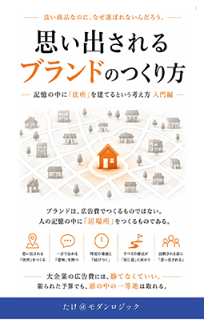
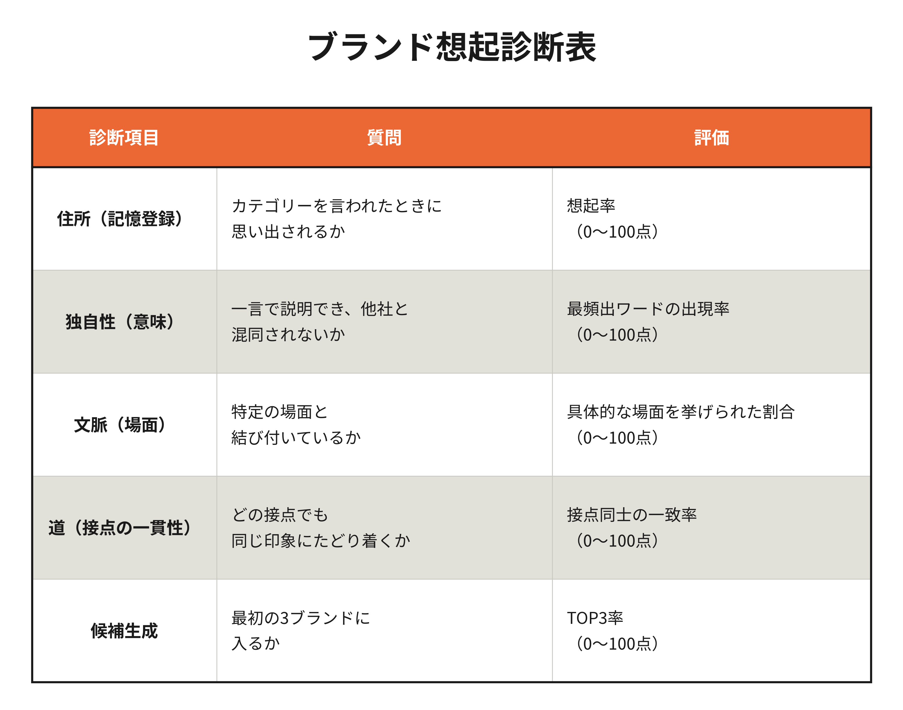

良い商品なのに、
なぜ選ばれないんだろう。
答えは、顧客の記憶の中に、あなたのブランドの「住所」がないからです。
ブランドは、広告費でつくるものではない。人の記憶の中に「居場所」をつくるものである。
なぜ、無名だったブランドが選ばれるのか。なぜ、大量に広告を出しても忘れられるブランドがあるのか。答えは、消費者の頭の中にある「記憶の仕組み」にあります。本書は、心理学や脳科学の知見をやさしくかみ砕きながら、ブランドを「広告作品」ではなく「顧客の記憶の中に建てる家」として捉え直す、はじめての人のためのブランド入門書です。
著者：たけ＠モダンロジック ／ Kindle版 ／ 入門編

こんなお悩み、ありませんか？
大企業のような広告費をかけられない会社ほど、この違和感に心当たりがあるはずです
良い商品なのに、価格でも品質でもない理由で選ばれていない気がする
大企業のように広告費を積めず、認知度の勝負では最初から不利だと感じている
SNSで一時的に話題になっても、しばらくすると忘れられてしまう
「差別化しよう」と言われても、何を一言で言えばいいのか分からない
ブランディングの本を読んでも、専門用語が多くて自社に落とし込めない
広告代理店に頼む予算がなく、自己流でなんとかしようとしている
ブランドを広告として見るか、記憶の家として見るか
選択は商品棚の前ではなく、頭の中で始まっている。だからこそ、記憶の中に確かな「住所」を持つことが必要になる
ブランドを広告・ロゴだと思い込む（多くの会社がハマる罠）
露出量とデザインの見栄えこそがブランディングだと錯覚してしまう
- ✓広告の接触回数を増やせば思い出してもらえると考えてしまう
- ✓ロゴやデザインを整えることがブランディングの完成だと誤解する
- ✓大企業と同じ土俵の広告合戦で消耗してしまう
- ✓一時的な話題性と「思い出される」ことを混同する
記憶の中に「住所」を建てる（本書のアプローチ）
才能や広告費ではなく、記憶の仕組みを味方につける
- ✓お客さんの記憶の中に、確かな「住所」を持つ
- ✓他社と混同されない、一言で言える「意味」を持つ
- ✓特定の生活シーン＝「文脈」と結びつく
- ✓広告でも店でも、同じ「道」にたどり着く一貫性を持つ
記憶に建築する、五つの設計
建築家が設計図なしに家を建てないように、ブランドもまた記憶の中の設計図なしに育つことはない

住所を決める
お客さんの記憶の中に、あなたのブランドの置き場所をつくる
意味を決める
他社と混同されない、一つに絞った価値を言葉にする
道をつくる
広告・店頭・SNS、どの接点でも同じ印象にたどり着く一貫した道筋を用意する
感情を住まわせる
記憶を「鮮明な部屋」にする、事実と感情の正しい比率を設計する
育て続ける
記憶はつくって終わりではなく、連想のネットワークとして育て続けるものである
ブランドは、診断できる
専門知識がなくても大丈夫。5つのやさしい質問に答えるだけで、自社のブランドの現在地がわかる

住所Address
お客さんは、その場面であなたを思い出せますか？
意味Meaning
その住所は、他社と混同されない一言で言えますか？
文脈Context
特定の生活シーンと結びついていますか？
道Touchpoint
広告でも店でも、同じ印象にたどり着けますか？
想起Recall
比較される前に、候補の3つに入っていますか？
こんな方におすすめです
目次
はじめに・全6章・おわりにで構成
ブランドは「知られる」ものではない。「思い出される」ものである。
ブランドは存在しない
ブランドは会社のどこにもなく、お客さんの記憶の中にだけ存在するという意外な事実から始める
人間は比較して選ばない
私たちは比較する前に、まず「思い出せるかどうか」で候補を絞り込んでいる
人間の脳には検索エンジンがある
頭の中で「候補」が浮かぶ仕組みを、脳内の検索エンジンにたとえてやさしく解説する
ブランドは診断できる
自社のブランドがお客さんの記憶のどこにあるのか、5つの質問でチェックする方法
ブランドは設計できる
記憶の中にブランドの「家」を建てる、5つの実践ステップ
ブランドは生き続けなければならない
記憶は「つくって終わり」ではなく、「育て続ける」ものだという話
「うちのブランドは、お客さんの記憶の中の、
どこに建っているだろうか。」
広告費を増やす前に、まず一つだけ自分に問いかけてみてください。大きな予算がなくても、有名な広告代理店に頼らなくても、人の記憶の仕組みさえ知っていれば、あなたの会社にしか建てられない、確かな居場所を記憶の中に築くことができます。その答えを見つけるための、いちばんやさしい一冊です。